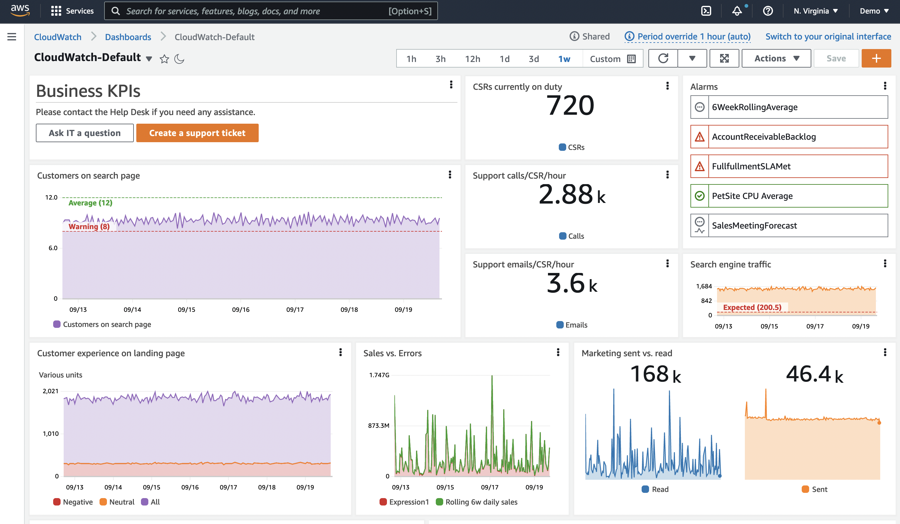
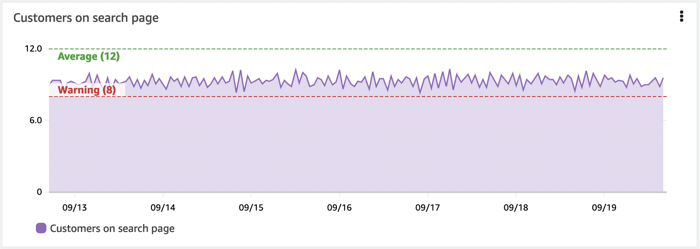

Dashboards¶
Dashboards are an important part of your Observability soluution. They enable you to produce a curated visualization of your data. They enable you see a history of your data, and see it alongside other related data. They also allow you to provide context. They help you understand the bigger picture.
Often people gather their data and create alarms, and then stop. However, alarms only show a point in time, and usually for a single metric, or small set of data. Dashboards help you see the behaviour over time.

A practical example: consider an alarm for high CPU¶
You know the machine is running with higher than desired CPU. Do you need to act, and how quickly? What might help you decide?
- What does normal CPU look like for this instance/application?
- Is this a spike, or a trend of increasing CPU?
- Is it impacting performance? If not, how long before it will does?
- Is this a regular occurrance? And does it usually recover on its own?
See the history of the data¶
Now consider a dashboard, with a historic timechart of the CPU. Even with only this single metric, you can see if this is a spike, or an upward trend. You can also see how quickly it is trending upwards, and so make some decisions on the priority for action.
See the impact on the workflow¶
But what does this machine do? How important is this in our overall context? Imagine we now add a visualization of the workflow performance, be it response time, throughput, errors, or some other measure. Now we can see if the high CPU is having an impact on the workflow or users this instance is supporting.
See the history of the alarm¶
Consider adding a visualization which shows how often the alarm has triggered in the last month, and combining that with looking further back to see if this is a regular occurrance. For example, is a backup job triggering the spike? Knowing the pattern of reoccurance can help you understand the underlying issue, and make longer term decisions on how to stop the alarm reoccurring altogether.
Add context¶
Finally, add some context to the dashboard. Include a brief description of the reason this dashboard exists, the workflow it relates to, what to do when there is an issue, links to documentation, and who to contact.
Info
Now we have a story, which helps the dashboard user to see what is happening, understand the impact, and make appropriate data driven decisions on what action and the urgency of it.
Don't try to visualize everything all at once¶
We often talk about alarm fatigue. Too many alarms, without identifiable actions and priorities, can overload your team and lead to inefficiencies. Alarms should be for things which are important to you, and actionable.
Dashboards are more flexible here. They don't demand your attention in the same way, so you have more freedom to visualize things that you may not be certain are important yet, or that support your exploration. Still, don't over do it! Everything can suffer from too much of a good thing.
Dashboards should provide a picture of something that is important to you. In the same was as deciding what data to ingest, you need to think about what matters to you for dashboards. For your dashboards, think about
- Who will be viewing this?
- What is their background and knowledge?
- How much context do they need?
- What questions are they trying to answer?
- What actions will they be taking as a result of seeing this data?
Tip
Sometimes it can be hard to know what your dashboard story should be, and how much to include. So where could you start to design your dashboard? Lets look at two ways: KPI driven, or incident driven.
Design your dashboard: KPI driven¶
One way to understand this is to work back from your KPIs. This is usually a very user driven approach. For layout, typically we are working top down, getting to more detail as we move further down a dashboard, or navigate to lower level dashboards.
First, understand your KPIs. What they mean. This wil help you decide how you want to visualize these. Many KPIs are shown as a single number. For example, what percentage of customers are successfully completing a specific workflow, and in what time? But over what time period? You may well meet your KPI if you average over a week, but still have smaller periods of time within this that breach your standards. Are these breaches important to you? Do they impact your customer experience. If so, you may consider different periods and time charts to see your KPIs. And maybe not everyone needs to see the detail, so perhaps you move the breakdown of KPIs to a separate dashboard, for a separate audience.
Next, what contribute to those KPIs? What workflows need to be running in order for those actions to happen? Can you measure these?
Identify the main components and add visualizations of their performance. When a KPI breeches, you should be able to quickly look and see where in the workflow the main impact is.
And you can keep going down - what impacts the perfomance of those workflows? Remember your audience as you decide the level of depth.
Consider the example of an e-commerce system with a KPI for the number of order placed. For an order to be placed, users must be able to perform the following action: search for products, add them to their cart, add their delivery details, and pay for the order. For each of these workflows, you might consider checking key components are functioning. For example by using RUM or Synthetics to get data on action success and see if the user is being impacted by an issue. You might consider a measurement of throughput, latency, failed action percentages to see if the performance of each action is as expected. You might consider measurements of the underlying infrastructure to see what might be impacting performance.
However, don't put all of your information on the same dashboard. Again, consider your user audience.
Success
Create layers of dashboards that allow drilldown and provide the right context for the right users.
Design your dashboard: Incident driven¶
For many people, incident resolution is a key driver for observability. You have been alerted to an issue, by a user, or by an Observability alarm, and you need to quickly find a fix and potentially a root cause of the issue.
Success
Start by looking at your recent incidents. Are there common patterns? Which were the most impactful for your company? Which ones repeat?
In this case, we're designing a dashboard for those trying to understand the severity, identify the root cause and fix the incident.
Think back to the specific indcident.
- How did you verify the incident was as reported?
- What did you check? Endpoints? Errors?
- How did you understand the impact, and therefore priority of the issue?
- What did you look at for cause of the issue?
Application Performance Monitoring (APM) can help here, with Synthetics for regular baseline and testing of endpoints and workflows, and RUM for the actual customer experience. You can use this data to quickly visualize which workflows are impacted, and by how much.
Visualizations which show the error count over time, and the top # errors, can help you to focus on the right area, and show you specific details of errors. This is where we are often using log data, and dynamic visualizations of error codes and reasons.
It can be very useful here to have some kind of filtering or drilldown, to get to the specifics as quickly as possible. Think about ways to implement this without too much overhead. For example, having a single dashboard which you can filter to get closer to the details.
Layout¶
The layout of your dashboard is also important.
Success
Typically the most significant visualizations for your user want to be top left, or otherwise aligned with a natural beginning of page navigation.
You can use layout to help tell the story. For example, you may use a top-down layout, where the further down you scroll, the more details you see. Or perhaps a left-right display would be useful with higher level services on the left, and their dependencies as you move to the right.
Create dynamic content¶
Many of your workloads will be designed to grow or shrink as demand dictates, and your dashboards need to take this into account. For example you may have your instances in an autoscaling group, and when you hit a certain load, additional instances are added.
Success
A dashboard showing data from specific instances, specified by some kind of ID, will not allow the data from those new instances to be seen. Add metadata to your resources and data, so you can create your visualizations to capture all instances with a specific metadata value. This way they will reflect the actual state.
Another example of dynamic visualizations might be being able to find the top 10 errors occurring now, and how they have behaved over recent history. You want to be able to see a table, or a chart, without knowledge of which errors might occur.
Think about symptoms first over causes¶
When you observe symptoms, you are considering about the impact this has on your users and systems. Many underlying causes might give the same symptoms. This enables you to capture more issues, including unknown issues. As you understand causes, your lower level dashboards may be more specific to these to help you quickly diagnose and fix issues.
Tip
Don't capture the specific JavaScript error that impacted the users last week. Capture the impact on the workflow it disrupted, and then show the top count of JavaScript errors over recent history, or which have dramatically increased in recent history.
Use top/bottom N¶
Most of the time there is no need to visualize all of your operational metrics at the same time. A large fleet of EC2 instances is a good example of this: there is no need or value in having the disk IOPS or CPU utilization for an entire farm of hundreds of servers displayed simultaneously. This creates an anti-pattern where you can spend more time trying to dig-through your metrics than seeing the best (or worst) performing resources.
Success
Use your dashboards to show the ten or 20 of any given metric, and then focus on the symptoms this reveals.
CloudWatch metrics allows you to search for the top N for any time series. For example, this query will return the busiest 20 EC2 instances by CPU utilization:
SORT(SEARCH('{AWS/EC2,InstanceId} MetricName="CPUUtilization"', 'Average', 300), SUM, DESC, 10)
Use this approach, or similar with CloudWatch Metric Insights to identify the top or bottom performing metrics in your dashboards.
Show KPIs with thresholds visually¶
Your KPIs should have a warning or error threshold, and dashboards can show this using a horizontal annotation. This will appear as a high water mark on a widget. Showing this visually can give human operators a forewarning if business outcomes or infrastructure are in jeopardy.

Success
Horizontal annotations are a critical part of a well-developed dashboard.
The importance of context¶
People can easily misinterpret data. Their background and current context will colour how they view the data.
So make sure you include text within your dashboard. What is this data for, and who? What does it mean? Link to documentation on the application, who supports it, the troubleshooting docs. You can also uses text displays to divide your dashboard display. se them on the left to set left-right context. Use them as full horizontal displays to divide your dashboard vertically.
Success
Having links to IT support, operations on-call, or business owners can give teams a fast path to contact people who can help support when issues occur.
Tip
Hyperlinks to ticketing systems is also a very useful addition for dashboards.